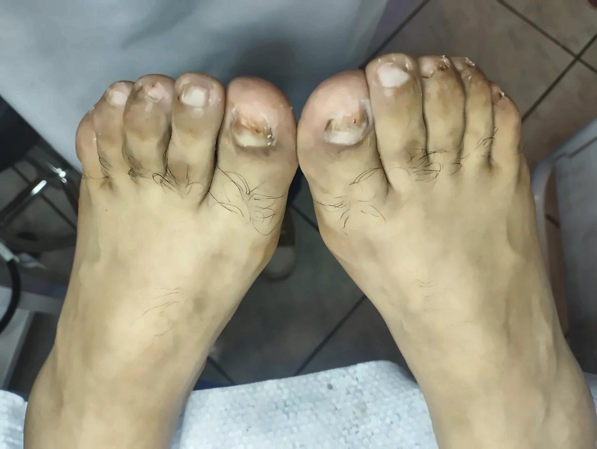
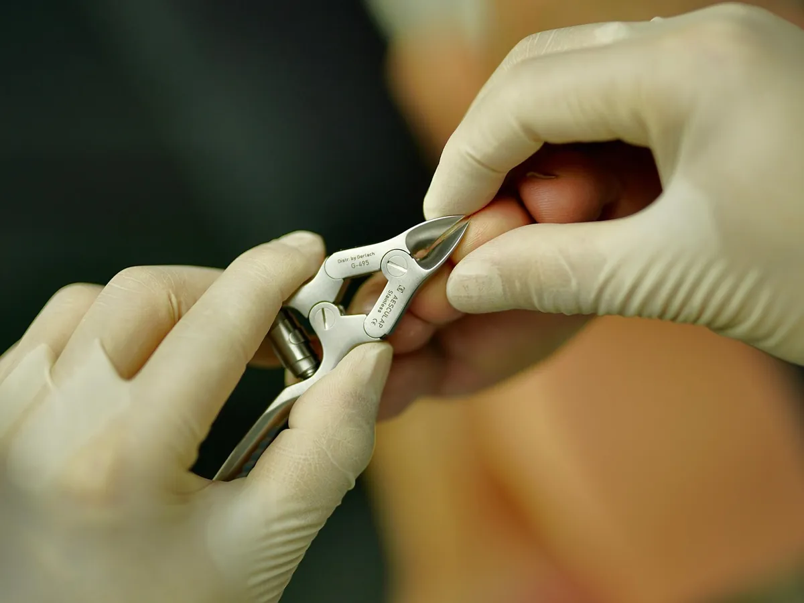
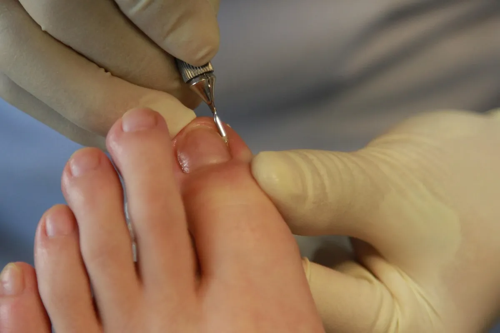
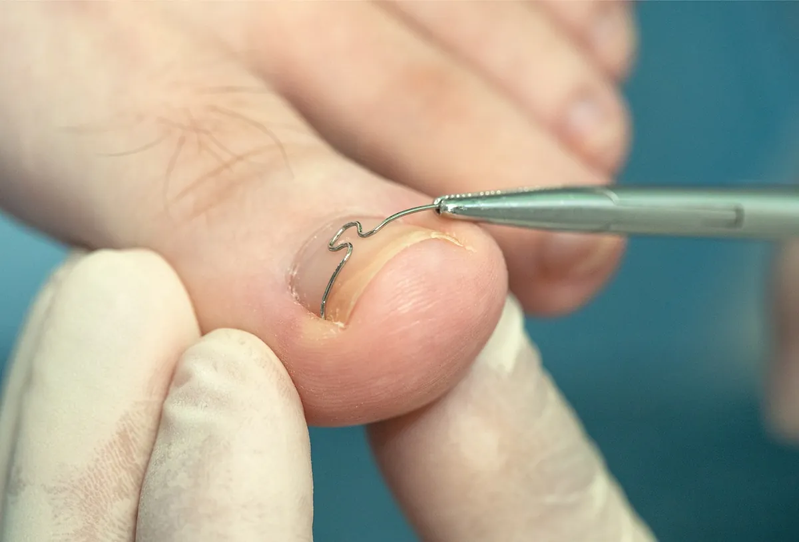
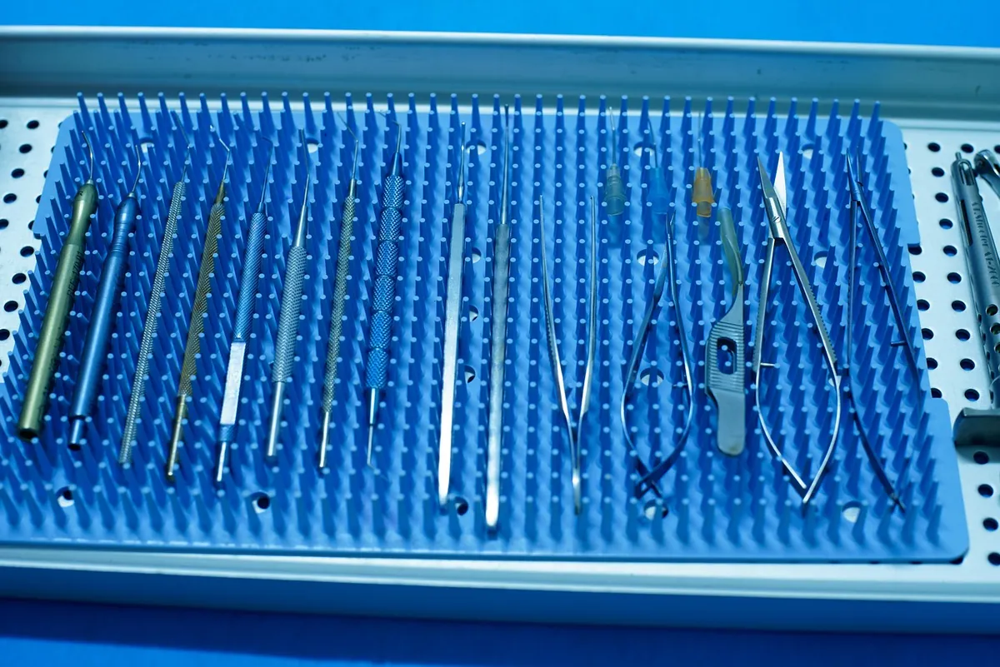

Tratamiento de hongos en las uñas
Onicomicosis
Evaluación y manejo podológico de uñas afectadas por hongos. Cada caso se valora individualmente para determinar el enfoque más adecuado.
Ofrecemos diferentes tratamientos podológicos adaptados a cada necesidad.

Onicomicosis
Evaluación y manejo podológico de uñas afectadas por hongos. Cada caso se valora individualmente para determinar el enfoque más adecuado.

Limpieza y cuidado completo de los pies. Incluye tratamiento de durezas, callosidades y cuidado general.

Corte y cuidado general de las uñas. Mantenimiento preventivo para conservar la salud de tus pies.

Atención podológica para uñas encarnadas. Alivio y manejo profesional de la zona afectada.

Técnicas orientadas al manejo de alteraciones en la curvatura de la uña. Corrección progresiva y personalizada.
Brindamos un servicio profesional, cercano y orientado al cuidado de tu salud podológica.

Encuentra la sede más cercana y reserva tu atención por WhatsApp.
Elige la sede para continuar por WhatsApp